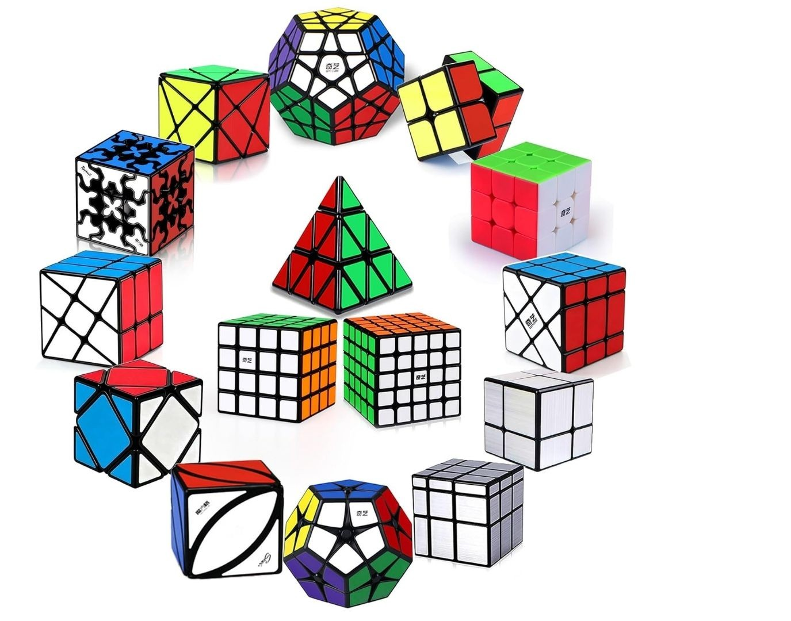

THE CUBE, EXPLAINED
There’s a surprising amount going on behind the six faces of a rubik's cube,
from its unusual origin to the mathematics and algorithms hiding underneath the scramble.
Let’s take a closer look.
01 – THE ACCIDENTAL PUZZLE
The story behind how it all began.02 – THE MATH BEHIND THE MADNESS
The surprisingly strange rules hiding inside 26 little pieces.03 – HOW DO CUBERS EVEN SOLVE THIS THING?
How they turn apparent chaos into a solution.
THE WORLD OF SPEEDCUBING
Solving a cube is one thing. Solving it in seconds and competing against people from all around the world
is something entirely different. Discover all about the cubing events and the insane world records set by speedcubers.